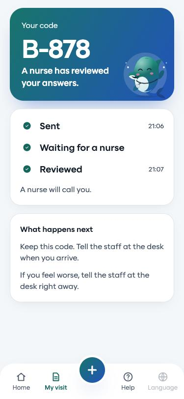
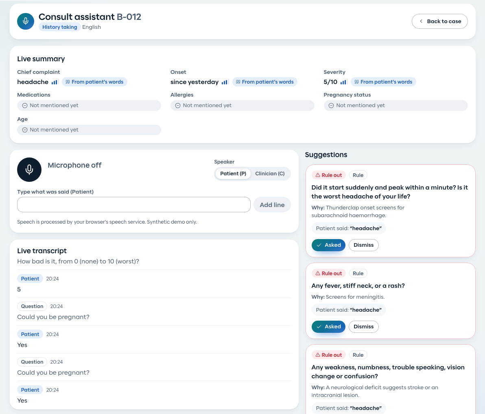
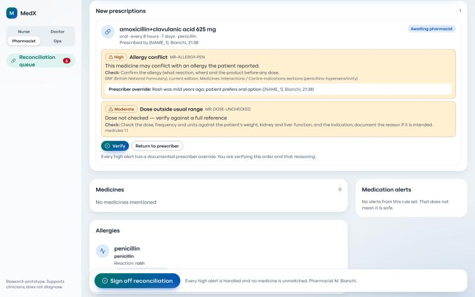

1
Patient
Speaks or types; sees when a nurse has read it

2
Nurse
Consult assistant: ask-next popups, source quotes

3
Doctor
Orders with an allergy alert and a written override
4
Pharmacist
Verify or return, with the doctor's reason in view
